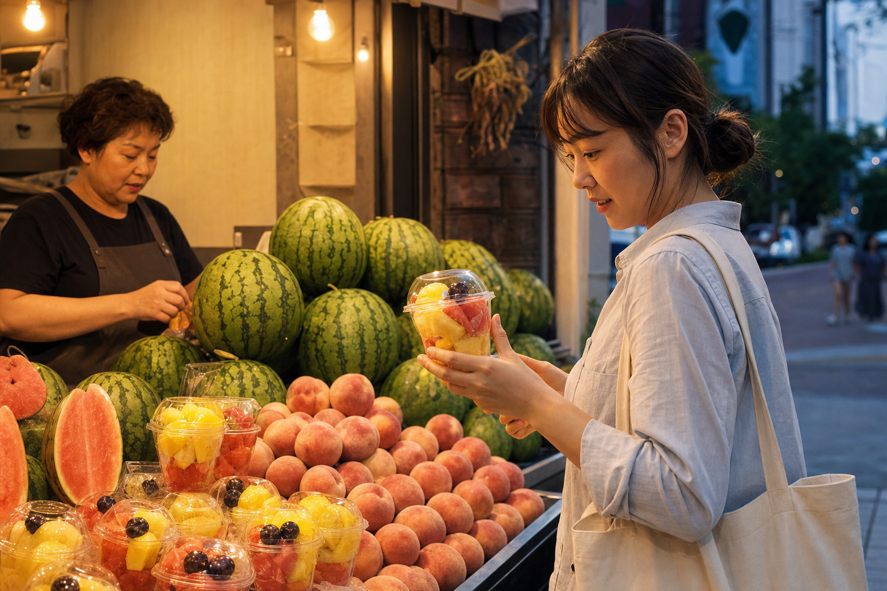

STORIES · 2026.08.04
수박 한 통 대신
컵과일을 고르는 여름밤
저녁 공기가 아직 덥고, 장바구니는 이미 무거운 날이 있습니다. 그럴 때 가게 앞에서 사람들은 큰 수박을 두 번 보고, 결국 손에 들고 갈 수 있는 한 컵을 고릅니다.

여름이면 수박은 늘 한가운데 놓입니다. 시원하고 넉넉하고, 가족이 함께 먹는 장면까지 바로 떠오르게 하는 과일입니다. 그런데 막상 퇴근길 가게 앞에서 오래 서 있는 사람들 손에는 수박 한 통보다 컵과일이 더 자주 들립니다. 잘라서 바로 먹을 수 있고, 냉장고 자리부터 걱정하지 않아도 되고, 오늘 저녁 한 번의 기분만 챙기면 되기 때문입니다.
이 장면은 과일이 작아졌다는 뜻이 아닙니다. 생활의 단위가 먼저 달라졌다는 뜻에 가깝습니다. 늦게 들어가는 집, 혼자 먹는 저녁, 아이 간식 하나만 챙기고 싶은 마음, 설거지 없이 시원하게 끝내고 싶은 피곤함. 과일은 그런 저녁의 속도에 맞춰 모양을 바꿉니다.
요즘 많이 팔리는 과일은 가장 큰 과일이 아니라 가장 바로 먹을 수 있는 과일일 때가 많습니다.
컵과일을 고르는 사람들은 대개 오래 설명을 듣지 않습니다. 뚜껑을 열면 어떤 향이 날지, 포크 없이도 먹기 쉬운지, 집에 가는 길에 국물이나 과즙이 새지 않을지가 더 중요합니다. 같은 수박이라도 한 통일 때와 한 컵일 때 기대하는 역할이 다르다는 뜻입니다. 하나는 주말의 식탁이고, 다른 하나는 오늘 밤을 무사히 건너게 해 주는 간단한 위로에 가깝습니다.
보관보다 즉시성, 양보다 부담 없음, 계획보다 지금의 기분. 컵과일은 작은 포장이 아니라 생활의 리듬에 맞춘 형태라는 점을 여름 저녁 가게 앞에서 가장 분명하게 보여줍니다.
대한과일협회가 이런 장면을 미디어에 남기는 이유도 여기에 있습니다. 과일 소비를 가격이나 품목만으로 보면 놓치는 것이 많습니다. 사람들은 배가 고파서만 과일을 사지 않습니다. 더운 하루 끝에 칼을 꺼내고 싶지 않은 마음, 큰 과일을 사두고 남길까 망설이는 마음, 딱 한 번 기분 좋게 먹고 싶은 마음이 함께 움직입니다.
그래서 여름밤의 컵과일은 작은 선택 같아도 꽤 많은 이야기를 품고 있습니다. 한 통짜리 풍경이 아니라 한 번 먹고 환해지는 장면으로 과일이 옮겨가는 순간. 그 변화는 과일이 덜 중요해졌다는 신호가 아니라, 사람의 하루에 더 가까운 자리로 들어왔다는 신호일지 모릅니다.